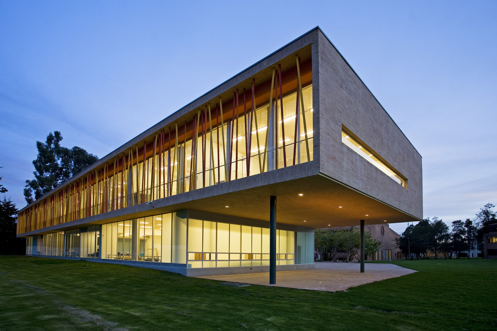

2001-2015
Colegio Los Nogales
I was born and raised in Bogotá, Colombia. I did my primary and elementary studies at Colegio Los Nogales. Here I did several sports like Roller Hockey, Basketball and Athletics. When I was older, I joined the martial band. I was a first row trumpet for several years and then at my last year I was elected as the trumpets leader by popular vote. I got to play solos multiple times and directed not only all of the trumpets, but also the entire band. This was the first time I noticed that I has skills being a group leather. I got to co-lead about 120 people to play in front of thousands on my last day of school and it was a complete success. What I enjoyed most wasn’t playing trumpet solos, but leading and guiding everyone to make a great final presentation.
2015-2020

Universidad de Los Andes
When I graduated, I wasn’t sure what I wanted to study. I was deciding between business management, economics, and computer science. For this reason, I got into Industrial engineering. This career had some things of all of the above. When I had my first programming course at the university, I decided that I had to enroll in computer science too. (Ingenieria de sistemas). From this point, I have been assistant at multiple programming courses and I have had excellent performance in both careers. Here I have had multiple teams to work with, and the skills I developed years ago back in school have been very helpful. Currently I’m a year away from graduating both careers.